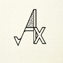

Experience
Backend & Cloud Pod Lead · Grand Challenges Scholars Program
Software Engineering Intern · grammar enforcement for media companies
AI Research Intern · AI-assisted physical therapy
Student Developer · Plone Foundation, open-source CMS
USC GCSP · Backend & Cloud Pod Lead · 2026
- Led the backend and cloud pods for the GCSP Network Portal, a collaboration platform connecting Grand Challenge Scholars across 100+ institutions.
- Owned API scalability on a FastAPI and Supabase service, with real-time channel messaging as a target for 50+ concurrent users.
- Revamped and expanded the project site, adding forums, direct messaging and channel chat.
Stylebot · Software Engineering Intern · 2025
- Built the grammar and style enforcement engine from scratch: rules like "roundup" vs "round-up" vs "round up", where getting it wrong matters to publishers.
- Took detection coverage to 98% across edge cases by building a labeled test corpus and iterating rule by rule.
- Ran in real time on text coming from Google Docs for 20+ enterprise media clients.
Indian Institute of Science · AI Research Intern · 2023–24
- AI-assisted yoga coach for physical therapy recovery; pose estimation on patients doing prescribed movements.
- Defined a custom anatomical keypoint schema together with doctors, then built the 10,000+ image dataset around it.
- Wrote the annotation tooling and validation pipelines that kept labels consistent as the team scaled.
Google Summer of Code · Plone Foundation · 2022
- Selected for Google Summer of Code with the Plone Foundation, one of the largest open-source CMS ecosystems.
- Ported the recycle-bin add-on to Plone 6: new packaging, API changes, tests, and upstream review.
- First real experience with open-source process: proposals, mentors, code review, and shipping to strangers.
Skills
- LLM agents
- Multi-agent systems
- Agentic workflows
- Model Context Protocol
- RAG
- Self-evolving agents
- Python
- TypeScript
- FastAPI
- Docker
- AWS
- PyTorch
Agentic AI
LLM engineering
AI & ML
Computer vision
Languages
Frameworks
Data & messaging
Cloud & DevOps
Web platform
Testing
Tooling
Edge & hardware
Games & media
Concepts
Selected work
Auto-Apply 2026
Tailors the resume, fills the form, then stops. You hit submit.
Chrome Extension Testing MCP 2026
Gives AI coding agents a real browser to test Chrome extensions on their own.
Project Hydra 2026
Real Docker topologies under real load, projected with the Universal Scalability Law.
Self-Evolving Agent 2026
A Battleship agent that rewrites its own strategy between games.

AudiTex 2026
310MB Kokoro TTS model running fully in the browser. No backend, no paywall.
Time-Keeper 2026
One timer, every device, magic-link login. Tracking shouldn't be a chore.
Preference Falsification in LLMs 2026
24 agents answer twice, once privately, once in public. The gap is the finding.
2D Physics Engine 2025
Rigid bodies, constraints, broad-phase partitioning, from scratch.
GitTrack 2025
Local-first job application tracker with duplicate detection and streaks.
Instant-Reply 2026
A few words in the Gmail reply box become a finished email in your own voice.
Re-Pong 2025
Pong with portals, power-ups and arena events. Most replayed game in the class.